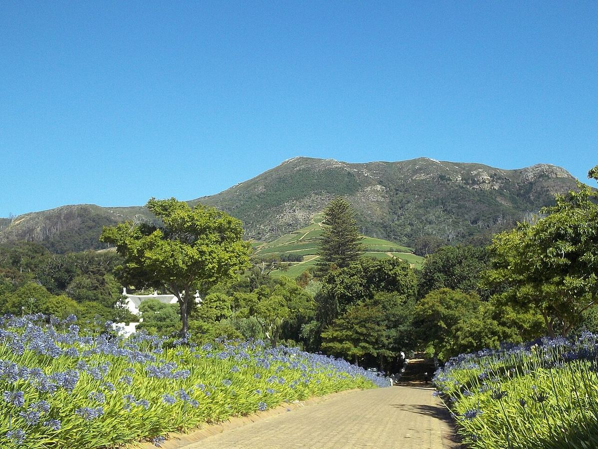

TINTO
Finca de Constantia que formó parte de la propiedad histórica de Simon van der Stel. Es célebre por haber recuperado el Vin de Constance, el legendario vino dulce de Moscatel del Cabo.

Klein Constantia ocupa una parte de las tierras que el gobernador Simon van der Stel recibió en 1685 al pie de la montaña de Constantiaberg. Tras su muerte, en 1712, la gran finca se dividió, y una de las partes resultantes dio origen a la actual Klein Constantia, «pequeña Constantia». En los siglos XVIII y XIX los vinos dulces de Constantia gozaron de una fama extraordinaria en Europa, pero su producción desapareció a finales del siglo XIX, tras la crisis comercial y las plagas que afectaron al viñedo.
En 1980 la finca fue adquirida por la familia Jooste, que replantó los viñedos y se propuso resucitar el antiguo vino dulce. A partir de la cosecha de 1986 elaboró el Vin de Constance, un vino dulce natural de Moscatel de grano menudo, conocido localmente como Muscat de Frontignan, que se embotella en una réplica de las antiguas botellas de la época. El vino se elabora con uvas que se dejan pasificar en la cepa, sin encabezar, y se cría durante años en barrica.
Además del Vin de Constance, Klein Constantia es conocida por su Sauvignon Blanc, que aprovecha el clima fresco de las laderas orientadas hacia False Bay, y elabora también otros blancos, tintos y espumosos de método tradicional. En la década de 2010 la finca pasó a manos de nuevos propietarios internacionales, que han invertido en la renovación de la bodega y de los viñedos.
La finca dispone de sala de catas en Constantia, a poca distancia de Ciudad del Cabo.